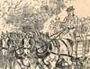

Collective Biographies of WomenAn Annotated Bibliography
Alison Booth
185.
Cochrane, Jeanie Douglas. Peerless Women: A Book for Girls. London: Collins' Clear-Type Press, [1905].
Search OCLC WorldCat for this title.
Search Google Books for this title.
Cochrane, Jeanie Douglas. Peerless Women: A Book for Girls. London: Collins' Clear-Type Press, [1905].
TOC: Victoria; Sister Dora; Mary Carpenter; Sarah Robinson; Agnes Weston; Angela Georgina, Baroness Burdett-Coutts; Florence Nightingale; Elizabeth Fry; Mrs. Isabel Reaney; Mary Ann Rogers; Frances Power Cobbe.
Refers to Victoria's funeral, the anniversary of Scutari (Nightingale still living) in 1903, and the death of Frances Power Cobbe in 1904; thus, published 1904-1911.
See also Pop Chart-
 Sister Dora
Sister Dora -
 Sister Dora
Sister Dora -
 Victoria and the Royal Family
Victoria and the Royal Family -
Mary Carpenter
-
Miss Carpenter
-
 Sarah Robinson
Sarah Robinson -
 Sarah Robinson
Sarah Robinson -
 Robinson's sailors
Robinson's sailors -
Baroness Burdett-Coutts
-
Baroness Burdett-Coutts
-
 Florence Nightingale
Florence Nightingale -
 Florence Nightingale
Florence Nightingale -
Elizabeth Fry
-
 Elizabeth Fry
Elizabeth Fry -
Mary Ann Rogers
-
 Frances Cobbe
Frances Cobbe
Search OCLC WorldCat for this title.
Search Google Books for this title.